تنزيل SQL Server 2022 صح من أول مرة
18 خطوة. كل خطوة فيها وين تشتغل وشو تكبس بالترتيب، ومعها صور من الفيديو. الأسماء هون أسماء lab، حط أسماءك مكانها.
▶ شوف الفيديو⬇ PDF1اعمل الـ KDS root key
افتح PowerShell كـ admin:
Start > PowerShell > right-click > Run as administrator
وبعدين:
Get-KdsRootKey Add-KdsRootKey -EffectiveTime ((Get-Date).AddHours(-10)) Get-KdsRootKey
آخر command لازم يرجع الـ key.
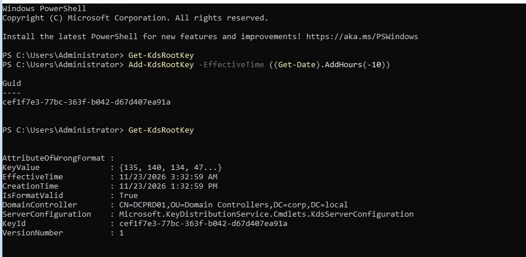
2اعمل group للسيرفرات
Server Manager > Tools > Active Directory Users and Computers
Users > right-click > New > Group
الاسم SQL_Servers، خلي Global و Security زي ما هم، و OK.
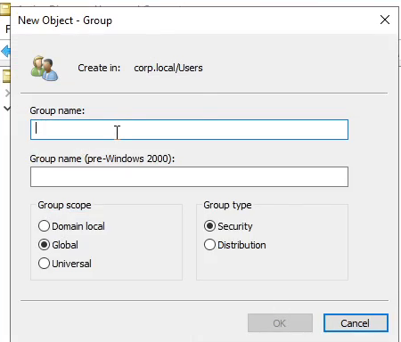
3حط SQLPRD01 بالـ group
SQL_Servers > Members > Add > Object Types > Computers
اكتب SQLPRD01، اضغط Check Names، و OK.
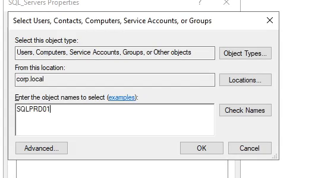
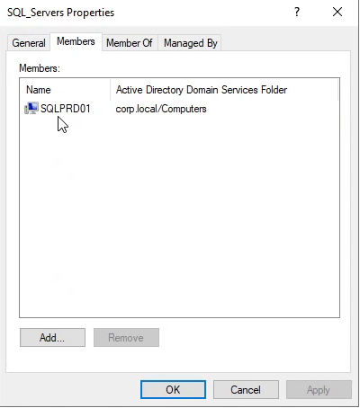
4اعمل الـ gMSA
New-ADServiceAccount -Name gmsa_sql -DNSHostName gmsa_sql.corp.local -PrincipalsAllowedToRetrieveManagedPassword SQL_Servers
ما رجع إشي؟ يعني نجح.
5جرّب الـ gMSA
klist -li 0x3e7 purge Test-ADServiceAccount -Identity gmsa_sql
لازم يرجع True.

6اعمل الـ folders واعطي الـ gMSA صلاحية
اعمل D:\DATA و L:\LOGS. على كل واحد:
right-click > Properties > Security > Edit > Add > Object Types > Service Accounts
اكتب gmsa_sql، Check Names، OK. بعدين علّم Full control، Apply، OK.
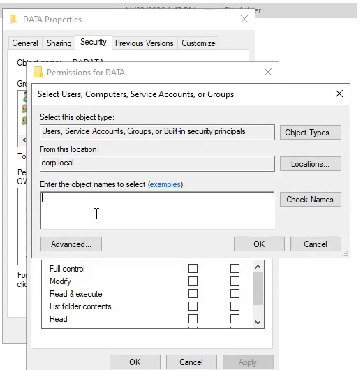

7نزّل SQL Server 2022
ابحث عن SQL Server 2022 Evaluation Center، نزّل الملف وشغّله، واختار Download Media.
لو طلب منك تنزّله من مكان ثاني، عادي، اضغط كمان مرة.

8شغّل الـ setup
double-click على الـ ISO عشان يعمل Mount، بعدين:
setup > right-click > Run as administrator
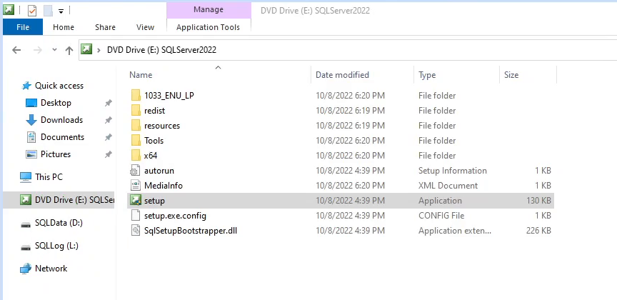
Installation > New SQL Server standalone installation
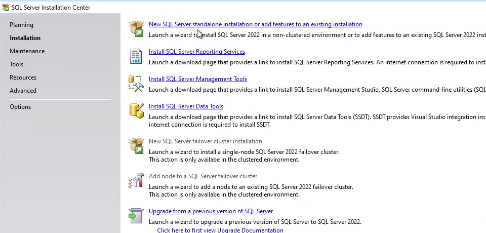
9الـ Edition
اختار Evaluation و Next. الصفحات اللي بعدها (License Terms، Rules، Microsoft Update): Accept و Next.
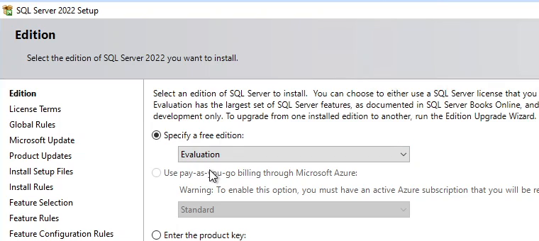
10الـ Features
علّم بس Database Engine Services.

11Named instance
اختار Named instance واكتب BUSINESS.

12الـ Service accounts
الـ Agent والـ Engine: CORP\gmsa_sql$ والـ password فاضي (الـ gMSA ما إله password تكتبه). علّم Grant Perform Volume Maintenance Tasks. الـ Collation خليه زي ما هو.
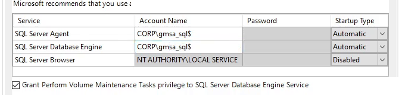
13Mixed Mode والـ admins
اختار Mixed Mode، حط password للـ sa، واضغط Add Current User. لازم يطلع اسمك بالقائمة.

14الـ Data و Log folders
بتبويب Data Directories: الـ Data D:\DATA والـ Log L:\LOGS. الـ TempDB والـ MaxDOP خليهم زي ما هم. الـ Memory: اختار Recommended وعلّم Accept.

15Install
بصفحة Ready to Install راجع الـ accounts والـ folders، بعدين Install.
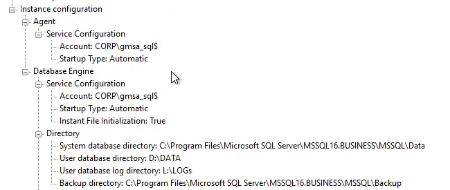
بالآخر كل إشي لازم يكون Succeeded.
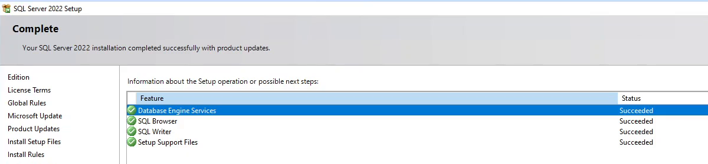
16ثبّت الـ port على 1433
افتحه من Start. أول إشي تأكد إن الـ services شغالة بالـ gMSA:
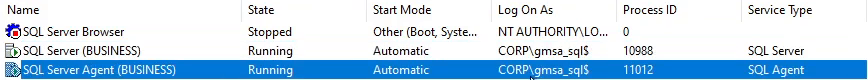
SQL Server Network Configuration > Protocols for BUSINESS > TCP/IP > IP Addresses
انزل لآخر قسم IPAll: امسح TCP Dynamic Ports، وحط TCP Port 1433، و OK.
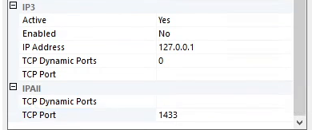
بعدين اعمل Restart:
SQL Server Services > SQL Server (BUSINESS) > right-click > Restart
17نزّل SSMS
ابحث عن SSMS، وبصفحة Microsoft اضغط Download SQL Server Management Studio 22 installer.
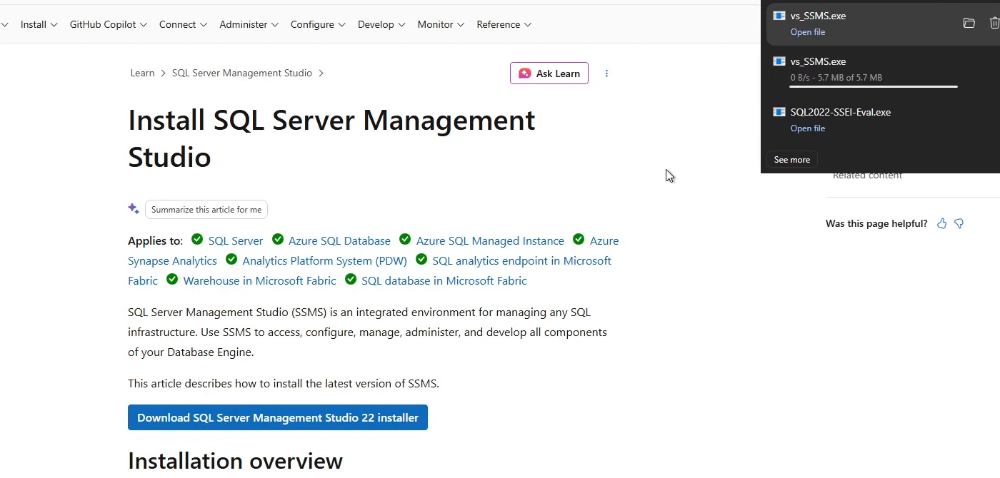
بالـ installer:
Individual components > Business Intelligence
علّم الثلاثة (فيهم Integration Services، بتحتاجه للـ maintenance plans)، و Install.
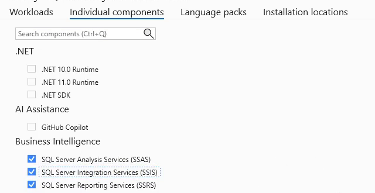
18اتصل
Server name SQLPRD01\BUSINESS، Authentication SQL Server Authentication، user sa والـ password، علّم Trust Server Certificate، و Connect. لازم تشوف السيرفر بالـ Object Explorer.

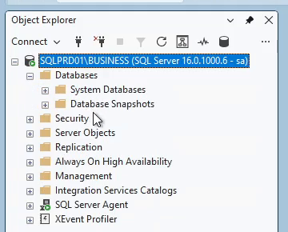
SQLPRD01\BUSINESS,1433- الـ KDS key: استعمل
-EffectiveImmediatelyواستنى 10 ساعات بدلAddHours(-10). - الـ firewall شغال، وافتح TCP 1433.
- Edition بـ key (Standard أو Enterprise)، و certificate حقيقي.